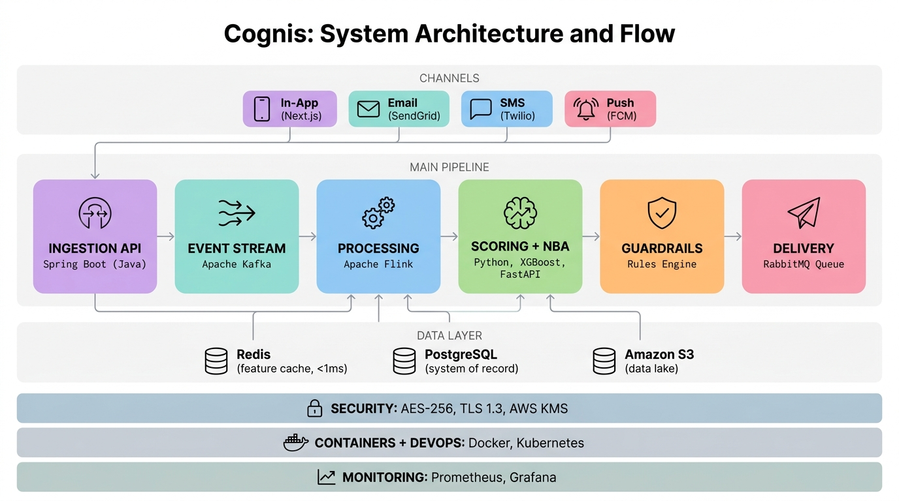
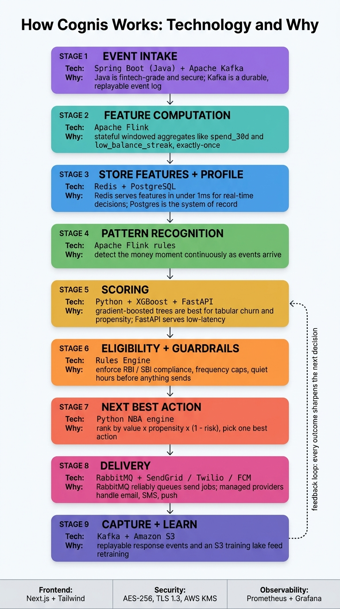

Cognis: SBI Hackathon @ GFF 2026
1. Problem Statement
Title: AI-Driven Financial Digital Engagement Engine
Most banking and fintech apps send the same message to everyone. A batch campaign goes out on a schedule, regardless of whether it fits the customer's situation, and it rarely reflects what the person is doing with their money. Cognis takes a different approach. It follows real activity, detects patterns and life events as they occur, and responds with an action that is useful at that moment. The entire MVP runs on free or open-source tools.
Requirements
- Ingest financial and behavioural events in near real time.
- Maintain a lightweight profile per customer, plus derived metrics such as 30-day spend and low-balance streak.
- Determine the next best action using rules, a model, or both.
- Reach the customer on at least one channel: in-app, email, or SMS.
- Demonstrate the full loop end to end: fire an event, see the response, and explain why it fired.
2. Business Context & Objectives
Across banking, insurance, and wealth management, customer engagement is shifting from scheduled campaigns to real-time response. The traditional routine (plan a campaign, push it to a segment, hope it lands) is giving way to reacting to current activity. Customers increasingly expect their bank to notice a salary change, a run of tight months, a trip, or a large purchase, and to respond with something that helps rather than another pitch.
What the platform delivers
- Ingests events from core systems and apps.
- Detects patterns and life events using rules and ML.
- Selects actions by balancing value, risk, and compliance.
- Sends the action, measures the response, and repeats.
Scope
- Built on established event-driven banking patterns.
- Modeled on Customer 360 architectures.
- Deliberately trimmed to an MVP.
- Buildable by a small team in one to two days.
3. Solution Overview
3.1 The idea
Cognis is a Digital Engagement Platform (DEP). Events arrive through a gateway and a streaming layer. Each customer has a single profile, backed by a small feature store that holds the behavioural and transactional signals we track. On top of that sits a Next-Best-Action (NBA) engine, built from rules and a model, that determines the right move at any given moment, delivers it through the channel that fits (the app, email, SMS, or a CRM task), and logs the outcome so the next decision improves.
3.2 Capabilities
| Capability | How it works |
|---|---|
| Event ingestion | Events arrive over HTTP or gRPC, are validated against a schema, and are published to the event bus. Production uses Kafka; the hackathon uses a lighter substitute. |
| Customer 360 & CDP | Bronze, silver, and gold data layers at the back, with a fast profile store at the front for reads that must be instant. |
| Signal computation | Stream and batch jobs keep the rolling metrics current: the last 30 days of spend, how long a balance has stayed low, and login frequency. |
| Models & rules | Models for churn, propensity, and financial stress, alongside a rules engine for eligibility and the regulatory guardrails. |
| NBA engine | Combines the scores and rules, then ranks and selects one action for this customer at this moment. |
| Delivery | Journeys, frequency caps, A/B tests, and connectors for push, email, SMS, and CRM tasks. |
4. High-Level System Design
Four areas carry the load: event ingestion, the customer view, AI and decisioning, and action delivery. The design follows the patterns found in any real-time engagement system.
graph LR
subgraph sources["Sources"]
CB["Core Banking & Cards"]
LN["Loans & BNPL"]
CH["Mobile / Web Apps"]
CRM["CRM & Call Center"]
EXT["External Data<br>(Credit bureaus, Open banking)"]
end
subgraph ingest["Ingestion & Streaming"]
GW["API / Event Gateway"]
SR["Schema Registry"]
EV["Event Bus<br>(Kafka / Pulsar)"]
end
subgraph data["Data & Customer 360"]
DL["Data Lakehouse<br>Bronze / Silver / Gold"]
IDR["Identity Resolution"]
C360["Customer 360 Profiles"]
FS["Feature Store"]
end
subgraph ai["AI & Decisioning"]
ML["ML Models<br>(churn, propensity, life events)"]
RULES["Rules Engine<br>(eligibility, compliance)"]
NBA["Next-Best-Action Engine"]
end
subgraph orch["Orchestration & Channels"]
JOR["Journey Orchestrator"]
CHN["Channel Connectors<br>(SMS, Email, Push, CRM)"]
end
subgraph ops["Ops & Governance"]
ADM["Admin Console"]
OBS["Monitoring & Audit"]
end
CB --> GW
LN --> GW
CH --> GW
CRM --> GW
EXT --> GW
GW --> SR
SR --> EV
EV --> DL
EV --> IDR
EV --> FS
DL --> C360
IDR --> C360
FS --> ML
C360 --> ML
EV --> NBA
FS --> NBA
ML --> NBA
RULES --> NBA
NBA --> JOR
JOR --> CHN
CHN --> CH
CHN --> CRM
ADM --- RULES
ADM --- JOR
ADM --- C360
OBS --- EV
OBS --- NBA
OBS --- CHN5. Agentic Architecture — Cognis & Its Sub-Agents
Cognis is the parent agent, the "knowing mind" (from the Latin cognoscere, "to recognize and know") that runs the engine, and the platform takes its name from it. Rather than a single monolithic brain, Cognis delegates. It coordinates a small family of specialist child sub-agents, each owning one job in the pipeline. Cognis routes each money moment to the right children, weighs what they return, and makes the final call. Every child shares the Latin "-is" ending, marking it as part of the same lineage.
In one line: Cognis is the parent orchestrator. Each sub-agent is a focused child it calls on, or spins up, for one specific task on the path from event to action.
5.1 The sub-agent family
| Sub-agent | What it owns | Maps to (Section 4) | Name root |
|---|---|---|---|
| Sensis | Senses and ingests every transaction, login, and balance change the moment it happens. | Ingestion & Streaming | sentio — "to sense" |
| Memoris | Builds and remembers each customer's profile, identity, and history. | Customer 360 / CDP | memoria — "memory" |
| Auguris | Forecasts churn, propensity, and financial stress from behavioural signals. | ML Models | augur — "to foretell" |
| Lexis | Enforces eligibility, frequency caps, and regulatory guardrails. | Rules Engine | lex — "law" |
| Arbis | Weighs scores, rules, and value to pick the single best next action. | NBA Engine | arbiter — "the one who decides" |
| Nuntis | Carries the chosen message to the right channel (app, email, SMS, CRM) at the right moment. | Orchestration & Channels | nuntius — "messenger" |
| Vigilis | Watches every outcome, audits the system, and feeds results back so the next call is sharper. | Ops & Governance | vigil — "the watchman" |
5.2 How Cognis orchestrates its children
flowchart TD
COG(["🧠 Cognis — parent orchestrator"]):::parent
COG --> S["👂 Sensis<br>Sense & ingest events"]
COG --> M["🗂️ Memoris<br>Customer 360 & memory"]
COG --> A["🔮 Auguris<br>Predict churn / propensity / stress"]
COG --> L["⚖️ Lexis<br>Rules & compliance"]
COG --> AR["🎯 Arbis<br>Pick the next best action"]
COG --> N["📣 Nuntis<br>Deliver across channels"]
COG --> V["👁️ Vigilis<br>Monitor outcomes & learn"]
classDef parent fill:#EDE9F5,stroke:#7C5CBF,color:#3A2A66;5.3 How the agents communicate
The family tree above shows who reports to whom. This view follows one event from start to finish, so the working order reads top to bottom: what each agent does, and how they hand off and report back. Sensis catches the event and passes it up to Cognis, the parent. Cognis then calls each specialist in turn (Memoris → Auguris → Lexis → Arbis), feeding each result into the next, and hands the chosen action to Nuntis for delivery. Vigilis watches the customer response and reports back to Cognis, so the next decision is sharper.
flowchart TB
EV(["A bank event happens"]):::event
SE(["Step 1 - Sensis<br>picks up the event"]):::child
CO(["Cognis<br>the parent that runs everything"]):::parent
EV ==> SE ==> CO
subgraph WORK["Cognis calls each helper in order"]
direction TB
ME(["Step 2 - Memoris<br>knows the customer"]):::child
AU(["Step 3 - Auguris<br>predicts what may happen"]):::child
LE(["Step 4 - Lexis<br>checks the rules"]):::child
AR(["Step 5 - Arbis<br>picks the best action"]):::child
ME --> AU --> LE --> AR
end
CO ==> ME
AR ==> NU(["Step 6 - Nuntis<br>sends the message"]):::child
NU ==> US(["The customer gets the message"]):::event
US -. responds .-> VI(["Step 7 - Vigilis<br>checks the result and learns"]):::child
VI -. sends learning back .-> CO
classDef parent fill:#7C5CBF,stroke:#4B2E83,color:#ffffff;
classDef child fill:#EDF5F4,stroke:#4F9D9D,color:#234E4E;
classDef event fill:#FBF4E9,stroke:#D9A441,color:#5C4326;6. Event-to-Engagement Flow
The full path a single event takes, from the moment it lands to the message that goes back out.
sequenceDiagram
participant Src as Source System
participant GW as API / Event Gateway
participant EV as Event Bus (Kafka)
participant SP as Stream Processor
participant C360 as CDP & Profile Store
participant FS as Feature Store
participant ML as ML Scoring API
participant NBA as NBA Engine
participant JOR as Journey Orchestrator
participant CHN as Channel Connector
participant User as Customer / RM
Src->>GW: POST event (transaction / login / EMI status)
GW->>EV: Publish raw event (schema validated)
EV->>SP: Consume raw event
SP->>C360: Update profile (identity resolution, traits)
SP->>FS: Update aggregates / features (windows, counts)
SP->>EV: Emit trigger candidate (e.g. salary_change)
EV->>NBA: Deliver trigger + customer ID
NBA->>C360: Fetch latest profile snapshot
NBA->>FS: Fetch feature vector
NBA->>ML: Request scores (churn, propensity, stress)
ML-->>NBA: Return scores
NBA->>NBA: Apply rules + constraints (rank, pick best)
NBA->>JOR: Send selected action + context
JOR->>JOR: Evaluate journey state & next step
JOR->>CHN: Request message / task delivery
CHN->>User: Deliver push / email / SMS / CRM task
User-->>CHN: Open / click / ignore / convert
CHN->>EV: Emit response event
EV->>SP: Feed back for analytics & retraining7. NBA Decision Logic
A closer look at how the NBA engine handles a trigger: it checks eligibility, scores the customer, ranks the candidate actions, respects frequency caps, and loops the result back in.
flowchart TD
A["Trigger candidate received"] --> B{"Eligible?<br>(rules + compliance)"}
B -- No --> Z["Suppress / log only"]
B -- Yes --> C["Fetch profile + features"]
C --> D["Score: churn, propensity, stress"]
D --> E["Generate candidate actions"]
E --> F["Rank by expected value<br>x propensity x risk"]
F --> G{"Frequency cap<br>or quiet hours?"}
G -- Hit cap --> H["Defer / queue for later"]
G -- OK --> I["Select best action"]
I --> J["Send to Journey Orchestrator"]
J --> K["Deliver via channel"]
K --> L["Capture response"]
L --> D8. Deployment / Production Architecture
How Cognis looks running in the cloud on Kubernetes: the microservices, the streaming cluster, the data platform, and the external systems it connects to.
graph TD
subgraph vpc["Cloud VPC"]
subgraph k8s["Kubernetes Cluster"]
AGW["API Gateway / Ingress"]
AUTH["Auth & IAM Service"]
subgraph svc["Microservices"]
ING["Ingestion Service"]
TRIG["Trigger Detection<br>& Stream Jobs"]
C360S["Customer 360 Service"]
FSS["Feature Store Service"]
MLS["ML Inference Service"]
RULESS["Rules Service"]
NBAS["NBA Service"]
JORS["Journey Orchestrator"]
CHNS["Channel Connector Service"]
ADMS["Admin Console Backend"]
end
OBS["Observability Stack<br>(Prometheus, Grafana, Logs)"]
end
subgraph streaming["Streaming Cluster"]
KAF["Kafka / Managed Stream"]
SR["Schema Registry"]
end
subgraph dataplat["Data Platform"]
DLake["Data Lake / Object Storage"]
DW["Lakehouse / Warehouse<br>(BigQuery / Snowflake)"]
PROF["Profile Store<br>(NoSQL / KV)"]
FSTORE["Online Feature Store<br>(Redis / Dynamo)"]
end
end
subgraph ext["External Systems"]
CB["Core Banking / Cards"]
LOAN["Loans / BNPL"]
MOB["Mobile & Web Apps"]
CRMEXT["CRM / Call Center"]
CHAN["Email / SMS / Push Providers"]
EXTD["External Data / Bureaus"]
end
MOB --> AGW
CB --> AGW
LOAN --> AGW
CRMEXT --> AGW
EXTD --> AGW
AGW --> AUTH
AGW --> ING
ING --> KAF
KAF --> TRIG
KAF --> C360S
KAF --> FSS
TRIG --> KAF
TRIG --> FSS
C360S --> PROF
C360S --> DLake
DLake --> DW
FSS --> FSTORE
DW --> MLS
FSTORE --> MLS
MLS --> NBAS
RULESS --> NBAS
PROF --> NBAS
FSTORE --> NBAS
NBAS --> JORS
JORS --> CHNS
CHNS --> CHAN
CHNS --> CRMEXT
CHNS --> MOB
ADMS --> RULESS
ADMS --> JORS
ADMS --> C360S
NBAS -.-> OBS
KAF -.-> OBS
DW -.-> OBS9. Data Model (MVP)
The Phase-1 MVP runs on a minimal Supabase schema (users, events, profiles, actions), shown below as an ER model.
erDiagram
USERS ||--o{ EVENTS : generates
USERS ||--|| PROFILES : has
USERS ||--o{ ACTIONS : receives
PROFILES ||--o{ ACTIONS : triggers
USERS {
uuid id PK
text full_name
text email
text segment
timestamptz created_at
}
EVENTS {
uuid id PK
uuid user_id FK
text event_type
jsonb payload
numeric amount
timestamptz occurred_at
}
PROFILES {
uuid user_id PK
numeric balance
numeric spend_30d
int low_balance_streak
numeric salary_latest
numeric stress_score
timestamptz updated_at
}
ACTIONS {
uuid id PK
uuid user_id FK
text trigger
text nba_action
text channel
text status
timestamptz created_at
}10. Customer Journey Lifecycle
The states the Journey Orchestrator moves each customer through: idle, triggered, the decision, delivery, engagement, and conversion.
stateDiagram-v2
[*] --> Idle
Idle --> Triggered : event detected
Triggered --> Decisioned : NBA selects action
Decisioned --> Delivered : channel sends
Delivered --> Engaged : open / click
Delivered --> Ignored : no response (timeout)
Engaged --> Converted : desired outcome
Engaged --> Idle : no conversion
Ignored --> Idle : cooldown
Converted --> [*]11. Business Model & Commercial Potential
11.1 Who this is for
- Mid-market banks and regional credit unions that want this kind of engagement but have no appetite for building a CDP and NBA stack from scratch.
- Neobanks, wallets, and BNPL providers that compete on experience rather than price and need a clear differentiator.
- Wealth managers and insurers that want to put next-best-action in front of their advisors and policyholders.
11.2 Revenue streams
| Stream | How it is charged |
|---|---|
| Tiered SaaS | A subscription priced on active profiles or monthly active users, as most CDP vendors do. |
| Usage-based | Pay for what you run: events processed, decisions made, messages sent. |
| Professional services | Hands-on help with data integration and custom model development. |
| Marketplace | Ready-made playbooks and model packs that drop straight in. |
Most banks run on scattered data and ageing systems, so an engagement layer they can plug in has real pull.
12. Technology Stack (Hackathon MVP)
| Layer | What we would reach for (free tier) |
|---|---|
| Frontend | React + TypeScript or Next.js, styled with Tailwind or Chakra. Deploy on Vercel's free Hobby tier and you still get the global CDN and CI/CD. |
| Backend & API | Node.js + TypeScript on Express or Fastify, or Supabase Edge Functions on Deno. Three endpoints carry most of the work: POST /events, GET /profile/:id, GET /actions/:id. |
| Database & Auth | Supabase's free tier covers Postgres, Auth, Storage, and Realtime: 500 MB of database, 50,000 monthly active users, 1 GB of files. |
| Event streaming | For the hackathon, simulate the stream with Supabase Realtime and a few DB triggers. Move to Kafka or Flink for production. |
| ML & AI | Python (FastAPI) or Node. Churn and propensity from scikit-learn or XGBoost, stress scored with simple rules, and optionally an LLM to write the message and explain the decision. |
| Analytics & monitoring | SQL and dashboards in Supabase, plus Vercel's logs and analytics for the frontend and API. |
Another free database option: Neon's serverless Postgres free tier gives roughly 0.5 GB of storage and 100 compute hours per project each month, with no card required. It is worth considering if you want more direct control over Postgres and plan to host the backend yourself.
13. Implementation Roadmap
Phase 1: Hackathon MVP (24–48 hours)
- Set up the Supabase tables:
users,events,profiles,actions.
- Build the
/eventsAPI and a Supabase Realtime subscription so new events appear live.
- Start with two rule-based triggers: a salary change (compare the latest salary event against the previous one) and financial stress (several low-balance or missed-payment events within 30 days).
- Keep the NBA rule-based for now (no model yet) and surface the actions in an in-app feed.
- Add a simple admin dashboard that counts triggers, actions, and conversions.
Phase 2: ML and a Smarter NBA
- Pull the Supabase data into a notebook for analysis.
- Train a basic churn or stress model and stand it up as a small scoring service.
- Feed those scores into the NBA so it ranks actions on more than rules alone.
Phase 3: Production
- Replace the stand-in event stream with Kafka or Flink.
- Build a full CDP with identity resolution and a real feature store.
- Add multi-tenancy, full role-based access, and the supporting governance.
gantt
title Cognis Implementation Roadmap
dateFormat YYYY-MM-DD
axisFormat %b %d
section Phase 1 - Hackathon MVP
Supabase schemas :p1a, 2026-06-23, 1d
Events API + Realtime :p1b, after p1a, 1d
Rule-based triggers + NBA :p1c, after p1b, 1d
Admin dashboards :p1d, after p1c, 1d
section Phase 2 - ML & Smarter NBA
Data export + training :p2a, after p1d, 5d
Scoring service :p2b, after p2a, 4d
Rules + scores in NBA :p2c, after p2b, 3d
section Phase 3 - Production
Kafka / Flink streaming :p3a, after p2c, 10d
CDP + feature store :p3b, after p3a, 10d
Multi-tenant + governance :p3c, after p3b, 10d14. Presentation Diagrams
Two slide-ready views compress the whole document into a single glance: a detailed end-to-end architecture and a compact core decision loop. Both are built for the deck.
14.1 Detailed — Full Engagement Engine (single slide)
flowchart TB
A(["📥 Something happens<br>a swipe, a login, an EMI is due"]):::step
B(["⚡ We notice it right away<br>events flow in as they occur"]):::step
C(["👤 We remember the person<br>their balance, spending, recent salary"]):::step
D{"🧠 What would genuinely help?<br>a few rules and a model weigh in"}:::think
E(["📣 We reach out, gently<br>in the app, an email, or a quick SMS"]):::step
F(["🙋 They respond their way<br>they open it, act on it, or let it pass"]):::step
A --> B --> C --> D --> E --> F
F -. and each time, we get a little sharper .-> C
classDef step fill:#FBF4E9,stroke:#D9A441,color:#5C4326;
classDef think fill:#EDF5F4,stroke:#4F9D9D,color:#234E4E;14.2 Small — Core Decision Loop
flowchart TB
E(["📥 A money moment"]):::step
P(["👤 We see who they are"]):::step
N{"🧠 Decide the best nudge"}:::think
C(["📣 Send it their way"]):::step
R(["🙋 See how they take it"]):::step
E --> P --> N --> C --> R
R -. learn, then do better .-> N
classDef step fill:#FBF4E9,stroke:#D9A441,color:#5C4326;
classDef think fill:#EDF5F4,stroke:#4F9D9D,color:#234E4E;14.3 At a Glance
| HOW IT WORKS | OUR UNFAIR ADVANTAGE |
|---|---|
| Catches events as they happen As soon as a payment clears or a balance dips, Cognis picks it up. | Built around real moments When a raise lands or a month turns tight, the response fits the moment rather than a fixed schedule. |
| One profile per customer Each customer's balance, spending, and history stay in one place. | Cognis runs the show Each job goes to the agent that handles it best, and the final call returns to Cognis. |
| Spots the patterns that matter For example, how much someone spent this month, or how long a balance has stayed low. | Compliance comes first Nothing reaches a customer until it clears the SBI and RBI guidelines. |
| Decides the next step It settles on the one action that fits that person right now. | Sharper with every interaction Whether a message is acted on or ignored, that shapes what comes next. |
15. Architecture Reference & Technology Rationale
This section collects the final architecture diagrams, the production technology stack, and the rationale for each technology choice.
15.1 System Architecture & Flow
A single-frame view of how a money moment travels through Cognis: channels in, the main pipeline (ingestion, stream, processing, scoring, guardrails, delivery), the data layer (Redis, PostgreSQL, S3), and the cross-cutting foundations (security, containers, monitoring).
{kind=link}

15.2 Technology Flow — What & Why
The same pipeline read top to bottom, with the technology and a one-line justification on every layer.
{kind=link}

15.3 Production Technology Stack
| Layer | Technology Used |
|---|---|
| Frontend | Next.js, Tailwind CSS |
| Backend / API | Spring Boot (Java) |
| Database & Auth | PostgreSQL, Supabase Auth |
| Streaming | Apache Kafka, Apache Flink |
| Queue | RabbitMQ |
| Cache / Feature Store | Redis |
| Storage | Amazon S3 |
| ML & NBA Engine | Python, XGBoost, FastAPI |
| Channels | SendGrid, Twilio, Firebase Cloud Messaging |
| Security | AES-256, TLS 1.3, AWS KMS |
| DevOps | Docker, Kubernetes, GitHub Actions |
| Monitoring | Prometheus, Grafana |